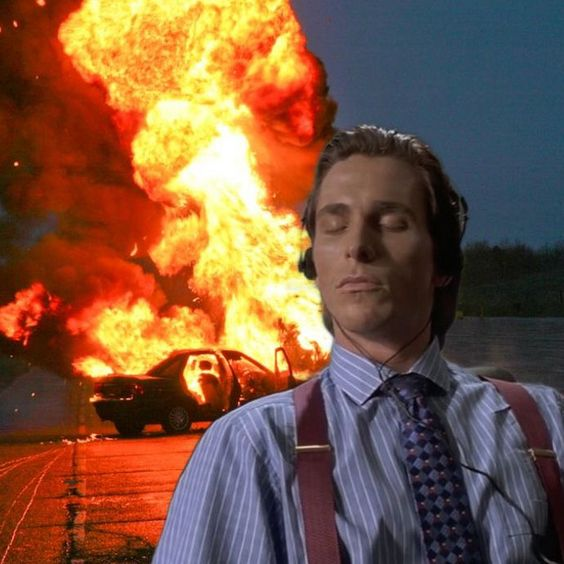

소화기
FIRE EXTINGUISHER
평소에 화가 많은 나... 대노 상태일 때 화를 식히는 여러 단계들이 있다.
화가 날 때 쓰는 5단계를 소개하고자 한다.
STEP.1
노래를 크게 틀어 외부와의 소음과 단절되고자 한다.

에어팟만 있으면 언제 어디서든 사용할 수 있는 방법이다. 크고 시끄러운
노래나 평소에 내가 좋아하는 카모 노래를 매우 크게 튼다. 바깥 소리가 차단 될
정도로 커야 잡생각이 들지 않아 화를 삭힐 수 있다. 너무 장시간 이 방법을 쓸 경우
청각에 문제가 생길 수 있으니 장시간 이 방법을 쓰는 것은 추천하지 않는다.
추천 노래로는 Flipp Dinero의 leave me alone 이 있다.
STEP.2
감정이 진정될 때까지 밖에서 하염없이 걷는다.

화가 좀 사그라들때까지 생각을 멈추고 무작정 걷는다. 아무 생각 없이 걸으면서
바람도 좀 쐬고 주변 풍경을 보다 보면 화가 나던 감정들이 그 사이 휘발될 때가 있다.
그렇게 감정이 진정될 때까지 하염없이 걸으면 된다. 자취방 근처에 선정릉이 있어
주로 거기서걷거나 강남역에서 선릉역까지 걷는다. 감정이 진정될 때까지걸은 후 집에
도착해 따뜻한 물로 샤워를 하면 기분이 훨씬 안정되는 것을 느낄 수 있을 것이다.
STEP.3
혼이 나갈정도로 매운 음식을 먹어 정신을 다른 곳으로 돌린다.
매우 매운 음식을 먹어 정신을 다른 곳으로 돌려 화를 가라앉히는
방법이 있다. 정신을 다른 곳으로 돌리다보면 왜 화가 났는지
금방 잊혀지기가 쉽다. 편의점에서 바로 구매 가능한 불닭볶음면을
추천한다. 하지만 과하게 매운 음식은 위장에 악영향을 미칠 수 있으니
주의해야한다.
STEP.4
친구들에게 전화로 내 상황을 하소연한다.
화가 나서 너무 답답할 때 이 방법을 주로 쓴다. 누군가에게 말한다고
문제가 바로 해결되는 것은 아니지만 친구들이랑 얘기하면서 감정이
진정될 때도 많고 위로를 받을 때도 많다. 친구들이랑 수다를 떨다가
화가 나던 일이 별것 아닌 걸로 느껴지기도 하고 친구들의 다양한
의견을 들으며 상황을 좀 더 다른 측면에서 바라볼 수 있게 되어서
좀 더 내 현상황을 침착하게 바라볼 수 있어 화가 가라앉는다.
STEP.5
현실에서 도피하고자 잔다.
위 방법들을 모두 시도해 보아도 화가 가라앉지 않는다면
그냥 빨리 잠드는 것을 추천한다. 자고 일어나서 다시 상황을
객관적으로 바라보면 훨씬 이성적으로 상황을 판단할 수 있게 된다.
또한 자고 일어나면 나른해져서 감정이 진정될 때가 많다.